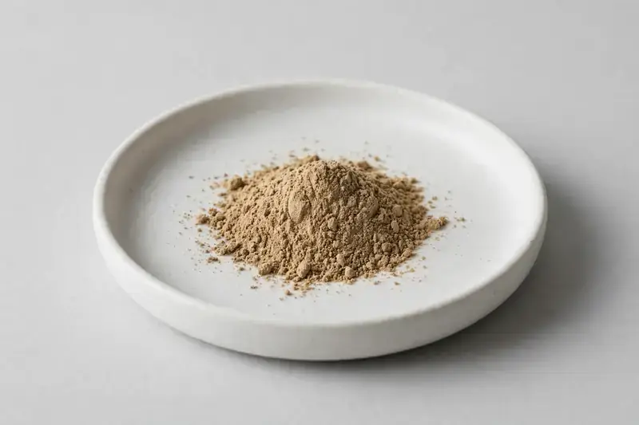

Withania somnifera — Root-derived Withania somnifera standardized to withanolides — for stress-support and adaptogen formulations.

Overview
Ashwagandha extract comes from the root of Withania somnifera, standardized to withanolides, the marker compound most buyers reference. Demand keeps growing in stress-support, sleep, and adaptogen categories. We're a Xi'an-based trading company sourcing through vetted partner producers — you tell us the spec, we confirm what we can supply.
Specifications below reflect commonly requested options in the market — not a stock list. Share your target spec and we'll confirm exactly what we can supply, honestly.
| Specification | Details |
|---|---|
| Botanical identity | Withania somnifera, root |
| Source material | Root |
| Marker compound | Withanolides — commonly requested: 2.5% / 5% (HPLC) |
| Appearance | Light tan to brown fine powder |
| Analytical methods | Methods referenced in buyer specifications: HPLC |
| Mesh size | Typically 80–100 mesh (confirm per inquiry) |
| Testing | COA/TDS arranged on request; scope agreed per your spec |
Applications
Documentation
We don't claim in-house labs or certifications we don't hold. COA and TDS documents can be arranged on request, and testing scope is agreed against your specification before supply.
FAQ
Related products
Rhodiola rosea
Key marker: Rosavins & Salidroside
View specs →Silybum marianum
Key marker: Silymarin
View specs →Ginkgo biloba
Key marker: Flavone Glycosides
View specs →Panax ginseng
Key marker: Ginsenosides
View specs →Curcuma longa
Key marker: Curcuminoids
View specs →Send your target spec and volumes — we'll respond with a tailored quotation.
Request a Quote